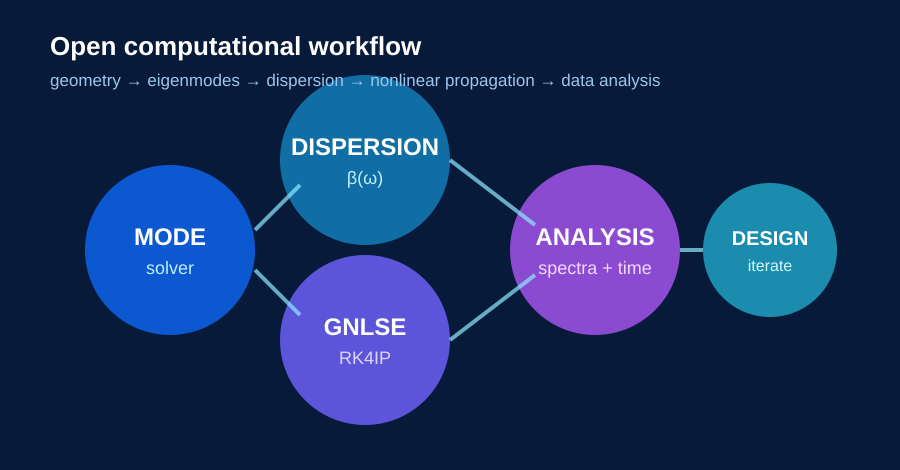

Computational photonics across spectrum, time, and space.
Our research uses numerical models to connect electromagnetic theory with ultrafast and nonlinear optical phenomena. The emphasis is on physics-rich, reproducible computational studies that can be advanced by undergraduate researchers.
Supercontinuum generation and dispersive-wave control
We model femtosecond pulse propagation in dispersion-engineered diamond waveguides using the generalized nonlinear Schrödinger equation. Current work examines soliton-related dynamics, broadband spectral generation, Raman effects, higher-order dispersion, self-steepening, and blue-side dispersive-wave emission.
A central question is how pump conditions control the output. In our current study, pump wavelength primarily tunes the spectral position of the blue-side dispersive wave, while pump power strongly controls its generation strength.


From geometry to nonlinear propagation
Our computational workflow links the optical structure to the nonlinear result. We calculate guided modes and effective indices, characterize dispersion and zero-dispersion wavelengths, estimate effective mode area and nonlinear response, and then propagate ultrashort pulses through the resulting model.
The lab is building around open-source and broadly accessible tools, including Python-based analysis, MPB/Meep workflows, gdsfactory for photonic layout, and numerical propagation codes.
Temporal mirrors and time-lens dynamics
We numerically investigate optical analogues of spatial reflection that occur in the time domain. Current work includes reconstruction of accelerated temporal-mirror dynamics using generalized nonlinear-wave propagation tools and analysis in a soliton reference frame.
This direction provides a computational route for studying advanced concepts such as temporal reflection, pulse interaction with moving temporal structures, and time-lens behavior.


FDTD, resonances, and field visualization
Student research projects use finite-difference time-domain methods and direct numerical field calculations to build intuition for electromagnetic waves. Projects include resonant modes of two-dimensional PEC cavities, 2D electromagnetic-wave solvers, and numerical magnetic-field modeling based on the Biot–Savart law.
These projects emphasize validation against analytical physics, convergence, discretization error, computational efficiency, and clear scientific visualization.
Mid-infrared supercontinuum and ultrashort pulses
ComPhotZone builds on prior research in highly nonlinear chalcogenide fibers and waveguides, including mid-infrared supercontinuum generation and ultrashort pulse generation. This background informs our current work on integrated nonlinear-photonic platforms and broadband coherent light generation.
Research philosophy
We use computation as a physics laboratory: start from governing equations, implement or adapt a numerical model, validate it, explore parameter space, and interpret the result in terms of physical mechanisms.

Ultrashort pulse generation using hybrid mode locking
This research direction studies the generation of ultrashort optical pulse trains through hybrid mode locking, where active and passive mode-locking mechanisms are combined in a single laser system.
The computational focus is on the pulse-formation dynamics, stability of the mode-locked state, repetition behavior, and how laser-system parameters influence the temporal and spectral characteristics of the generated pulses.
All-optical cryptography using quantum-dot semiconductor optical amplifiers
This project investigates the use of quantum-dot semiconductor optical amplifiers (QD-SOAs) as nonlinear photonic elements for all-optical cryptographic signal processing.
The research direction focuses on how optical signals can be transformed, combined, or encoded directly in the optical domain using semiconductor-device nonlinearities, with the broader goal of high-speed photonic information processing without repeated optical-to-electrical conversion.